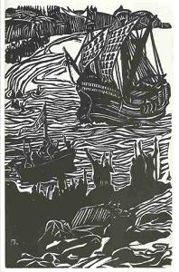
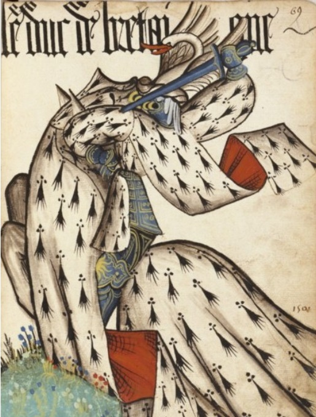
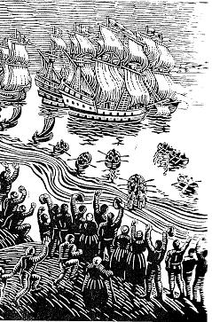
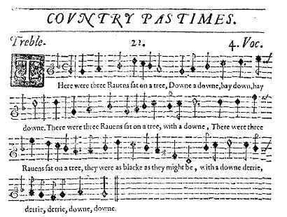
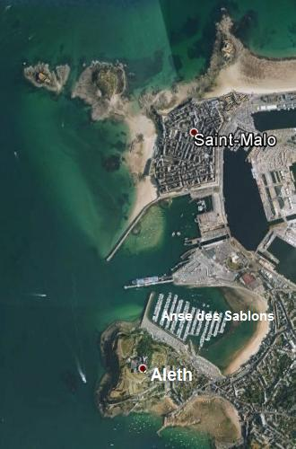
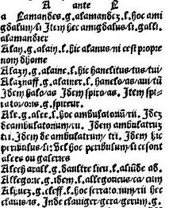
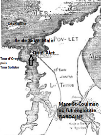
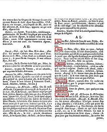
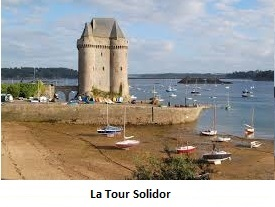

Un cygne
A Swan
Dialecte de Cornouaille
|
Le carnet N°2 contient ce chant noté sur les pages 154-83 à 156-85 (20 premières lignes). La présentation en ligne semble inclure la totalité de la page 156-85, mais tout le reste de celle-ci est la source partielle d'un autre chant, "Le temps passé" (56). La page 154-83 porte l'indication "Brengolo, sabotier à Koat Skiriou": il s'agit à l'évidence du même informateur que celui du chant Le faucon, Brangolo un sabotier de Coat-Squiriou en Quéménéven (au sud de Châteaulin). (Cf. Klemmgan Itron Nizon) Gourvil considère en particulier (p. 490 de son "La Villemarqué") que les strophes 26 et 30 du présent chant sont directement inspirées des dernières lignes des strophes 5 et 8 du Chant d'Altabiscar, texte basque apocryphe publié en 1835 dans le "Journal de l'Institut Historique" et reproduit en 1837 par Francisque Michel dans son édition de la "Chanson de Roland". Non seulement le chant, mais les 2 strophes incriminées figurent presque identiques sur le carnet N°2, ce qui atteste de façon incontestable leur authenticité. Le texte du carnet et sa traduction française sont donnés, strophe par strophe, en regard de la strophe correspondante du Barzhaz, dans la version bretonne (vignette cliquable "Gwenn ha Du" ci-après°. |
   A g. et à d.: 2 gravures sur bois de Jeanne Marivel: Arrivée de Jean IV de Montfort à Saint-Malo Au centre le Duc de Bretagne en 1504: Grand Armorial équestre de la Toison d'or (cf. § Problème d'héraldique) |
The notebook N ° 2 includes this song noted on pages 154-83 to 156-85 (first 20 lines). The online presentation of this song seems to ascribe to it the whole of page 156-85, but the bottom half of it appears to be, in fact, the (partial) source for another gwerz "The good old time" (56). Page 154-83 bears the indication "Brengolo, clogmaker at Koat-Skiriou", who is obviously the same informant as for the song "The hawk", a named "Brangolo", clogmaker at Coat-Qquiriou near Quéménéven (south of Châteaulin). According to Luzel and Joseph Loth, quoted by Francis Gourvil (p. 389 of his "La Villemarqué"), this historical song was "invented" by its alleged collector. Gourvil considers in particular (p. 490 of his "La Villemarqué") that stanzas 26 and 30 of the song at hand are mere adaptations of the last two lines of stanzas 5 and 8 in the Altabiscar song, an apocryphal Basque text published in 1835 in the "Journal de l'Institut Historique" and copied in 1837 by Francisque Michel who first edited the "Song of Roland". The song as a whole, in particular the two incriminated stanzas, appears, almost identical in the notebook N ° 2, which proves, beyond any shadow of doubt, its authenticity. The text in the notebook and its French translation are given, stanza by stanza, opposite the corresponding stanza of the Barzhaz, on the Breton version page (click below Breton flag thumbnail!). |
Ton
Mode Dorien
"Tempo di Marchia": 2/4 et 2/8 (mesures 4 et 7)
The Three Ravens
"Melismata" de T. Ravenscroft, 1651
|
A propos de la mélodie: La mélodie ci-dessus est pratiquement celle sur laquelle on chante aujourd'hui le poème traditionnel écossais "The twa corbies" (Les deux corbeaux). Ce texte fut publié par Walter Scott dans son recueil "Minstrelsy of the Scottish Border", volume II, en 1802 (cf. Vidéo, en bas de cette page). Il était dépourvu de musique et c'est le poète écossais Thurso Berwick, alias Morris Blythman (1914-1981) qui le premier imagina de lui adjoindre la mélodie du "Cygne" du Barzhaz, qu'il tenait de l'épouse du musicien breton Paul (Pollig) Montjarret (1920-2003), la chanteuse Zaig Montjarret (celle-ci, nous apprend Wikipédia, est le co-auteur d'une adaptation en dialecte Scots, spirituellement appelé "Gallo écossais", du texte de La Villemarqué). Le premier enregistrement du chant ainsi constitué fut un super 45 tours de 1961 intitulé "Far over the Forth" où il est interprété par la chanteuse Ray Fisher accompagnée par son frère, le guitariste Archie Fisher. C'est ce que l'on lit sur la jaquette du disque d'origine. Depuis, le chant est passé dans le répertoire de chanteurs de musique traditionnelle. Cette information m'a été fournie par la violoniste, spécialiste de musique celtique traditionnelle, Kate Dunlay. Comme Walter Scott le fait remarquer, ce poème, communiqué par un certain Charles Kirkpatrick Sharpe de Hoddom, qui le tenait d'une dame, imite (à rebours) un chant funèbre (dirge) anglais "The Three Ravens" (Les trois corbeaux) publié à Londres, avec la musique, dans le livre de chants intitulé "Melismata", par Thomas Ravenscroft en 1611. Cette jolie mélodie élisabéthaine et celle du "Cygne" ont un certain air de famille. En particulier le "Din, din, daon..." du "Cygne" fait peut-être écho au "Down, derrie, derrie, down..." des "Trois corbeaux". Wikipédia et M. David K. Smythe, sur le site "www.recmusic.org", constatent cette ressemblance sans l'expliquer. Selon F. Gourvil, La Villemarqué aurait inventé sinon la totalité, du moins certaines des mélodies du Barzhaz. En l'occurrence, il aurait pu s'inspirer du chant noté par Ravenscroft, également publié par Ritson dans ses "Scotish Songs" en 1794. En 1961 la mélodie aurait accompli le parcours inverse. Si le texte anglais de "Twa Corbies" dut attendre jusqu'en 1961 pour être doté d'un accompagnement musical, (hormis une composition de Malcolm Lawson dans le recueil "Songs of the North" de 1884), il eut plus de chance en Russie, où la traduction (à partir d'un texte français) "Dva Vorona" publiée en 1829 par Pouchkine a donné lieu à de nombreuses adaptations musicales par des compositeurs prestigieux, en particulier Rimsky-Korsakov (1844-1908) et Anton Rubinstein qui en publiera en 1868 une version allemande, "die beiden Raben". Les premières versions chantées datent de 1828 (M.Y. Velgorsky) et 1829 (A.A. Aliabev). |
 |
To the tune: This melody is nearly identical with the tune to which the traditional Scots poem "The twa corbies" (the two ravens) is sung nowadays. This text was published by Sir Walter Scott in his collection "Minstrelsy of the Scottish Border", volume II, in 1802 (see video below). No tune was set to it. It was the Scots poet Thurso Berwick, alias Morris Blythman (1914-1981) who first had the idea of setting it to the "Swan" tune from the "Barzhaz Breizh", learned from the wife of the Breton musician Paul (Pollig) Montjarret (1920-2003), the folk singer Zaig Montjarret, who helped him adapt La Villemarqué's lyrics to the Scots dialect wittily dubbed "Scottish Gallo" (there is much the same relationship between French and the Romance dialect called 'Gallo', spoken in Eastern Brittany, as between Scots and the King's English). The first recording of the new ballad, in 1961, was an EP titled "Far over the Forth" where it is sung by Ray Fisher accompanied by her brother Archie on guitar, as stated on the original EP's sleeve notes. Since then the song has passed into the folk-singers' repertoire. This info was provided by Kate Dunlay, the co-author with her husband of "Traditional Celtic Violin Music of Cape Breton, the DunGreen Collection". As mentioned by Sir Walter Scott himself, "this poem... communicated to him by Charles Kirkpatrick Sharpe, Esq. junior, of Hoddom, as written down, from tradition, by a lady...coincides very nearly with an ancient dirge called "The Three Ravens" published in London (with the melody) in Thomas Ravencroft's "Melismata", in 1611. This beautiful Elizabethan melody and the "Swan" melody have some family likeness. In particular the burden "Din, din, daon..." in the "Swan" possibly echoes the "Down, derrie, derrie, down..." in the "Three Ravens". Wikipedia and Mr M. David K. Smythe, on the site "www.recmusic.org", notice this similarity but don't explain it. In Francis Gourvil's opinion La Villemarqué might have invented at least part of the tunes of the Barzhaz. In the present case, he was perhaps inspired by the song recorded by Ravenscroft which was also included by Joseph Ritson in its "Scotish Songs" in 1794. So that, in 1961, the melody only found its way back home! If the English lyrics of "Twa Corbies" had to wait till 1961 to be set to a tune, (except Malcolm Lawson's Song for a low Voice de in the "Songs of the North" collection, 1884) they were luckier in Russia, where the translation (from a French text), published as "Dva Vorona" by Pushkin gave birth to several musical adaptations by prominent composers, in particular Rimsky-Korsakov (1844-1908) and Anton Rubinstein who also gave in 1868 a German version, "die beiden Raben". The first sung versions date back to 1828 (M.Y. Velgorsky) and 1829 (A.A. Aliabev). |
| Français | English | |
|---|---|---|
|
En italiques: Strophes ajoutées par La Villemarqué. En gras: Mots significatifs modifiés par rapport au MS. Venu de l'outre-mer, un cygne! REFRAIN Ding, ding, dong, au combat, au combat, oh! Ding, ding, dong, au combat allons! 2. Nouvelle agréable aux Bretons, Qui l'est moins aux Français, dit-on. 3. Au port une nef est entrée, Ses voiles blanches déployées; 4. Le seigneur Jean est de retour, Il vient pour nous porter secours. 5. Pour nous protéger des Français Qui méprisent nos libertés. 6. Un cri de joie a retenti Dont le rivage a tressailli, 7. Les monts du Laz y font écho La jument grise(1) hennit bien haut ! 8. Entendez les cloches sonner Dans chaque bourg à la volée! 9. L'été vient, le soleil accourt, Le seigneur Jean est de retour!. 10. Le seigneur Jean est notre orgueil Il a toujours bon pied, bon oeil. 11. Au lait de Bretagne élevé, Aussi sain que vin vieux, ce lait! 12. Quand il le brandit son pal brille. Les yeux qui le voient s'écarquillent. 13. L'épée qu'il tient d'une main sure Peut fendre en deux homme et monture 14. - Duc, aie donc du cœur à l'ouvrage, Pour la buée, pour l'étuvage! 15. Quand il sait hacher comme lui, Hormis à Dieu, nul n'obéit! 16. Tiens bon Breton, c'est la relève! Sang pour sang! Ni merci ni trêve! 17. Si Notre Dame des Bretons Veut sa fête, nous la ferons! 18. Le foin est mûr, bon à faucher! Et le blé prêt à moissonner! 19. Cette moisson, qui la fera? Le roi nous dit :" Ce sera moi!!" 20. Avant qu'il ne pleuve à torrent, Il vient avec sa faux d'argent.(2) 21. Pour nos prairies, sa faux d'argent, Faucille d'or pour nos champs! 22. Les Français nous prennent-ils donc Pour des manchots, nous les Bretons? 23. Ce roi même, à ses propres yeux, Est-il homme, ou bien est-il dieu? 24. Les loups Bas -Bretons vocifèrent En entendant le ban de guerre. 25. Comme ils hurlent à nos hourras: L'odeur des Francs les met en joie! 26. Bientôt on verra les chemins Ruisseler de sang, comme drains, 27. Rougissant le poitrail des oies Blanches et canards à la fois. 28. Au sol, plus d'épieux en morceaux Qu'après tempête, de rameaux. 29. Et plus de crânes défoncés Que l'on en trouve en nos charniers. 30. Là où les Français tomberont, Qu'ils attendent Armaguédon 31. Pour partager le châtiment D'un vil Traître, leur commandant! (3) 32. L'égout des arbres sera l'eau Bénite arrosant son tombeau! Ding, ding, dong, au combat, au combat, oh! Ding, ding, dong, au combat allons! (1) La mer (2) Peut-être une allusion à "l'herbe d'or". La Villemarqué n'a pas traduit "a-benn ur gaouad" (au bout d'une averse). (3) Du Guesclin Trad. Christian Souchon(c) 2008 |
 |
In italics : Stanzas added by La Villemarqué. In bold : Significant words modified in comparison to the MS. Flies above Castle Arvor! See! CHORUS Din, din, dong, to the fight, to the fight, o! Din, din, dong, to the fight I go! 2. For you, Bretons, it is good news! French, it's the end of your abuse! 3. A ship is entering the bay, With all its white sails on display: 4. Back home, back home is our lord John To protect his land he has come. 5. Protect us all against the French: Our rights they break. Our hopes they quench. 6. We raise a cry, joyful and clear, The whole shore quivers from that cheer. 7. Laz Hill echoes increase its force As stumbles and neighs the grey horse! (1) 8. Hark! The bells ring with joyful sound. In towns for hundred leagues around! 9. The sun has come. Summer has come. And now back home is our lord John! 10. Our Lord John who's a gallant wight, He's both swift-footed and sharp-eyed! 11. As a child, sucked a Breton breast Next to old wine for health the best! 12. The spear he shakes so brightly gleams That eyes are blinded by these beams. 13. With his sword he can be so coarse, As to cut in-two man and horse! 14. - Come on, Lord Duke, hit, believe me! Swamp them with blood deep as can be! 15. Chop to small pieces as you do. Nobody, but God, may make you. 16. At them! Brave Bretons! No excuse! Blood for blood! No pardon or truce! 17. Our Lady of Brittany, help! We will found a mass for your sake! 18. The hay is ripe and must be reaped Since it's ripe, we must scythe the wheat. 19. By whom will be stored wheat and hay? The king says: "I'll take them away!" 20. He'll come before the pouring rain With a silver scythe on our plain. (2) 21. Silver scythe our meadows to mow Gold sickle to reap what we sow. 22. Do the French think, who to us tend, That we cannot for ourselves fend? 23. Or is their king anxious to know If he's man or god, here below? 24. The Breton wolves they gnash their teeth, When gathering calls spread o'er the heath. 25. Hearing the cheers, they give a yell Since of the French the scent they smell! 26. O'er paths and lanes shall run a flood But not of water, of sheer blood, 27. And ember-red will make the sauce Ducks and white geese swimming across. 28. More lances scattered on the ground Than, after a storm, boughs be found. 29. And more death's heads shall fall, by far, Than in our charnel houses are. 30. Soldiers from France, where'er they fall, Lay there until doomsday horns call, 31. When they'll be tried and sentence said On the vile Traitor at their head. (3) 32. The rain that drips down from the leaves Be holy water on his grave! Din, din, dong, to the fight, to the fight, O! Din, din, dong, to the fight I go! (1) The sea. (2) Maybe a hint at the famous "golden herb". La Villemarqué did not translate "a-benn ur gaouad" (after a downpour). (3) Du Guesclin ! Transl. Christian Souchon (c) 2008 |
Cliquer ici pour lire les textes bretons (versions imprimée et manuscrite).
For Breton texts (printed and ms), click here.

|
Résumé Il s'agit du retour d'Angleterre et du débarquement à Saint-Malo, le 3 août 1379, du Duc Jean IV de Montfort, venu prendre la tête du soulèvement contre le roi Charles V (1338 - 1364 - 1380) , pourtant dit "Le Sage", qui avait fait déclarer le pays réuni à la couronne de France. L'armée française vaincue par les Bretons était commandée par Du Guesclin, considéré dès lors par ses compatriotes comme un traître. C'est du moins ce qui ressort de la strophe 31 du poème du Barzhaz. Modifications apportées au manuscrit par Villemarqué En comparant avec le manuscrit, on remarque qu'il s'agit là d'une des 7 strophes ajoutées par le collecteur. Elles visent à organiser le récit et à en rendre la lecture plus attrayante par des détails qui parleront aux lecteurs férus d'histoire: - str. 1, "kastel ar mor", "château de la mer", devient "kastel Arvor", "château du littoral", où l'on peut supposer que l'un est entièrement entouré d'eau et l'autre non. La Villemarqué élude la question et traduit "château d'Armor". Ce dernier mot est donné par le Larousse universel de 1922 comme un synonyme d'Armorique, c'est-à-dire "Bretagne française" (certainement par opposition à la Grande Bretagne). C'est sans doute un faux-sens, l'"Armorique" étant en Breton, le plus souvent "(an) Arvorig" (seul mot connu du dictionnaire du Père Grégoire). - str. 8 et 9 : ajoutent aux manifestations de liesse les cloches qui sonnent à la volée et justifient le refrain "ding, ding, dong..." (que La Villemarqué ne prend pas la peine de noter en entier, car on le retrouve dans d'autres chants) et l'évocation de la belle saison qui rappelle que l'évènement eut lieu un 3 août. - str. 11 : Jean IV eut une nourrice bretonne, une note de ce patriotisme local si suspect aux yeux de Gourvil, à juste titre en ce qui concerne cet unique passage. - str. 14 : reprise du manuscrit sans changement notable , si ce n'est que "darc'h atav, dalc'hmat, Aotrou Duk!" pourrait être l'évocation du proverbe: "Dalc'hmat Yann, sac'h, c'hwi duk e Breizh!" (Tenez bon, allez-y, Jean et vous serez duc de Bretagne!), ce dont le Barzhaz ne souffle mot. - str. 15 : prolonge la description de la force surnaturelle du Duc en y ajoutant un élément politique: ce seigneur ne peut être le suzerain de personne. - str.17 : qui rappelle sans doute que le culte de Notre Dame du Folgoët fut instauré précisément par Jean IV. Celui-ci avait fait construire son sanctuaire quatorze ans auparavant, en 1365. - str.23; Dans "La langue du Barzaz Breiz et ses irrégularité", (Annales de Bretagne et des Pays de l'Ouest, 1966, p. 563-586) , Francis Gourvil faisait remarquer, à propos de "Daoust hag int mank ar Vretoned?" ("Si les bretons sont des manchots" dans la traduction de La Villemarqué", str. 22), qu' "une construction régulière de la phrase exigerait "Daoust-hag-eñ ar Vretoned zo mank?" ou "Daoust ha mank eo ar Vretoned?" Il semble que la phrase reproduite sans changement par rapport au manuscrit, si ce n'est le début "Ha plije..." remplacé par "Mar plije" ("Plait-il aux Français" devient "S'il plait aux...") soit tout à fait correcte. Et le sens est clair: "Plait-il aux Français (de savoir) si les Bretons sont des manchots?" En revanche, la transformation subie par la strophe 23 en altère gravement le sens: "Ha plije gant an Aotrou Roue / Dazont daoust-hag-eñ zo Doue?" = "Plait-il au futur Sire le Roi (de savoir) si Dieu existe?" devient dans le Barzhaz: "Daoust hag eñ eo den pe Zoue?" traduit par "Voudrait-il apprendre le seigneur roi, s'il est homme ou Dieu?" L'ajout des mots "den" et "pe" ("homme" et "ou"), combiné avec l'éclatement de l'expression toute faite "daoust-hag-eñ"="Est-ce-que" en "daoust-hag"+eñ= "Est-ce qu +'il" réalise cette métamorphose. La phrase originelle exprime la déférence envers la monarchie de droit divin et la volonté de la rétablir à l'avenir. Elle n'est pas déplacée dans la bouche d'un Chouan. Celle du Barzhaz est un défi lancé au royal envahisseur français, mais elle est factice. A la strophe 38 du chant du Barzhaz Les Bleus (ajoutée par La Villemarqué aux trois modèles collectés qu'il a utilisés pour composer son poème), on voit pourtant que l'auteur de ce recueil comprenait parfaitement cette expression: Il insère le vers: "Ha ra yelo ar baotred c'hlaz da c'hout hag-eñ zo Doue", qu'il traduit: "Et que les Bleus s'en aillent savoir s'il y a un Dieu!" - str. 28 : reprend le mot "goaf" (lance, épieu) qui fleure bon le Moyen Âge, bien qu'il soit absent du manuscrit. A la strophe 12, "Luc’hed a daol e gorf pa eñ horrel", Son corps jette des éclairs quand il joue à la crosse (l'ancêtre du hockey), il semble logique de lire "korf", corps, plutôt que "goaf", lance. - enfin la str. 31, elle aussi absente du carnet de collecte. Cette adjonction, - ainsi que l'infime modification de la strophe suivante, la 32 ("e vez", sa tombe [celle du Traitre] au lieu de "o bez", leur tombe [celle des Français]) - ressemble fort à une supercherie. Elle permet à son auteur d'annexer à ce chant qui n'en parle nulle part un commentaire d'une cinquantaine de lignes sur "messire Bertrand du Guesclin... que ce chant énergique qualifie de "traître" (trubar), un mot peut-être suggéré par sa présence sur la même page, mais dans le contexte d'un autre chant. En ce qui concerne les changements de mots ou de tournures opérés çà et là, par le collecteur, on ne peut que reprendre l'observation faite par M. Donatien Laurent à propos du "Faucon", lorsqu'il regrette "l'abandon de termes expressifs pour des expressions banales". Dans le cas présent "a zo trec'h mad" (sont bons vainqueurs) fait place à "a vac'hom" (empiètent); "kuit ha skañv" (libre et léger) à "prim" (prompt); "gres" (vif, en vannetais) à kreñv (fort), "liesoc'h" (plus souvent) à "muioc'h" (plus). Pour le reste, La Villemarqué a eu la sagesse de reproduire fidèlement ce magnifique poème dont il loue l'"énergie". Le titre du poème dans le manuscrit Le titre que porte ce chant à la page 154-83 est "Gwai gwenn alar", repris page 155-84 sous la forme "Gwai gwez alar" où "gwai est la forme cornouaillaise de "gwazi", le pluriel de "gwaz", l'oie. Il faut comprendre ce titre ainsi: "Les oies blanches dites 'alar'", puis "Les oies sauvages dites 'alar'". Dans l'esprit du locuteur, "alar", apposé au pluriel "gwazi" (oies) est, semble-t-il, un de ces mots collectifs qu'affectionne la langue bretonne, tels que "gwez", des arbres, "koumoul", des nuages, etc. De sorte qu'à la première strophe, "un alar" signifie, dans l'esprit du chanteur mais peut-être pas dans celui de l'antique compositeur qui lui, connaissait ce mot, "un vol d'oies sauvages" plutôt qu'un seul oiseau. On comprend maintenant pourquoi on pouvait difficilement repérer sous le titre "gwai gwez", le poème "Le cygne", sur les listes de chants des carnets 2 et 3 publiés par Melle Eva Guillorel et pourquoi en revanche, M. Donatien Laurent qui avait certainement jeté un coup d'œil au carnet N°2, affirmait si sereinement dans le catalogue de l'exposition nantaise "La Bretagne au temps des Ducs" (nov.1991- février 1992): "Le troisième [poème historique chanté] n'a été par contre collecté que par La Villemarqué qui l'intitule 'An Alarc'h', Le cygne...Il évoque le retour triomphant d'Angleterre du duc Jean [I]V en 1379 et son débarquement à Saint-Malo." Par ailleurs, si le mot "alar" de la strophe I ("Un 'alar', un 'alar' tramor"..."un 'alar', un 'alar' d'outremer") se trouve précédé dans le titre donné par le sabotier Brangolo à son chant, par l'explication "[un vol d]'oies sauvages" ou "d'oies blanches", cela montre que ledit mot, s'il figurait encore dans ce chant ancien, n'était plus compris dans les années 1840. La Villemarqué aurait pu faire le rapprochement avec le mot latin "olor, oloris", qui désigne le cygne dans cette langue, tout comme 'cycnus, cycni' (si toutefois ces termes ne s'appliquent pas à des espèces différentes parmi les cinq catégories de cygnes distinguées par les ornithologues). Mais, suivant sa pente naturelle, il a bien vite ouvert un dictionnaire gallois et y a trouvé "alarch, eleirch" qu'il a aussitôt acclimaté en "alarc'h, elerc'h". De ce fait, les développements faits jusqu'ici sur une possible confusion avec "Aleth", l'ancien nom de Saint-Malo, n'ont plus lieu d'être. Sauf toutefois en ce qui concerne la question de la localisation précise du débarquement de 1379. Le port de Saint-Malo n'a été praticable qu'à partir de 1427 et la "tour chauve du château de la mer" ("tour moal kastell ar mor") où se pose le vol d'oies sauvages, (chassées de leur élément naturel par des bateaux qui occupent l'Anse des Sablons), peut très bien être ce qui restait du château d'Oreigle rasé, l'endroit où sera édifiée trois ans plus tard la Tour Solidor. L'assimilation à un chant de Chouans Le sous-titre "Chant de Chouans" qui suit le titre et précède le nom de l'informateur, Brangolo, montre assez que ce dernier était persuadé d'interpréter un morceau appartenant à cette catégorie qui lui était familière. Le fait que cette indication est barrée et complétée en bas de page par les mots "C'est Jean IV et non les Chouans" suggère que La Villemarqué a d'abord été de cet avis, puis s'est ravisé. Cette hypothèse s'appuie sur le fait que le chant intitulé Jean de Leuhan (interprêté par une certaine Marianne) et dont le titre ("Yann Leuc'han") pourrait désigner ce personnage, se chante sur la mélodie du "Cygne", comme semble l'indiquer le refrain noté, après la strophe 6, par La Villemarqué, p. 57 / 29 de son 2ème carnet de collecte: Il est identique à celui du chant "An alarc'h", consigné pp. 154 / 83 dudit carnet sous la dictée du sabotier Brangolo.. On rencontre le refrain L'hypothèse d'un épisode de la "Ligue". On pourrait penser aussi à un autre "Yann", le général espagnol Juan d'Aguila (1545-1602) qui après s'être fait une réputation de stratège à Malte et aux Pays-Bas espagnols fut envoyé par Philippe II soutenir Mercoeur, gouverneur de Bretagne, contre l'accession au trône de France du protestant Henri de Navarre (Henri IV). A la tête d'un détachement de quelques milliers de fantassins espagnols, il débarqua au Blavet (aujourd'hui, Port-Louis) en 1590. Il fut sans doute populaire auprès des Bretons, avant qu'ils ne se rendent compte que les Espagnols se conduisaient sur leurs terres comme en pays conquis. Ce n'est cependant qu'après ce débarquement qu'il fit entreprendre la construction d'une citadelle au Blavet. Ce "fuerte del Aguila" fut démoli à la demande des Etats de Bretagne à partir de 1598, mais on laissa subsister quelques éléments dont deux bastions; La chronologie exclut donc qu'il sagisse de la "tour moal kastell ar mor" (la tour chauve du fort de mer) dont parle le chant de la page 154 du carnet. L'évocation des montagnes de Laz serait surprenante (elles sont à près de 60 km à vol d'oiseau de Port-Louis), mais guère plus que dans les hypothèses précédentes (cf. infra). En revanche, le chant de la p.154 contient la phrase : "Digouet an Aotrou Yann en-dro,/ Digouet eo da ziwall e vro", le Seigneur Jean est de retour,/ Il est venu défendre son pays, dont on voit mal comment elle pourrait s'appliquer à un général espagnol! Les Montagnes de Laz La référence aux Montagnes de Laz s'explique par un tropisme propre aux "gwerziou" qui tendent très souvent à incorporer des références familières à l'auditoire. Si, comme indiqué dans le Barzhaz, le chant avait été collecté à "Kerc'hoant dans les Montagnes d'Arez" (comprenez "Kerrouant en Leuhan dans les Montagnes Noires"), ce lieu serait à proximité immédiate des rochers de Laz, car Leuhan et Laz sont deux communes voisines. S'il s'agit au contraire de Coat-Squiriou en Quéménéven, on ne s'éloigne guère plus que d'une quinzaine de km de ce signal remarquable. Notons que les "aménagements" apportés par La Villemarqué à son texte ne font que brouiller la logique du récit: il remplace, à la strophe 7 les "chevaux gris" (ar c'hezek glas) que le chanteur lui dit être les nuages (koumoul) transportant au loin (d'Aleth à Laz, 130km!) les ovations que suscitent l'arrivée du duc Jean, par une "cavale blanche" (kazeg c'hlaz) dont une note nous apprend qu'il s'agit de la mer. Incidemment, ce détail montre l'importance des commentaires que les chanteurs se transmettaient en même temps que les chants. La Villemarqué n'a en l'occurrence pas été jusqu'au bout de la démarche, puisqu'il a trahi finalement son informateur. C'est compte tenu de ces nouveaux éléments qu'il convient de lire les commentaires de la présente page. Un véritable chant historique Les détracteurs habituels de La Villemarqué ne semblent pas trop s'acharner sur ce chant qu'il est pourtant le seul à avoir collecté. M. Donatien Laurent le cite parmi les chants historiques authentiques. Les faits sont bien connus ("Argument" p.228 BB1867): Après la mort de Charles de Blois à la bataille d'Auray en 1364, Montfort (1339 - 1399), son rival est reconnu par tous comme Duc de Bretagne. Mais celui-ci est tellement anglophile que ses barons le mettent bientôt en demeure de chasser les Anglais ou de s'en aller lui-même. Jean de Montfort choisit la deuxième solution et se retira en Angleterre en 1373. Le roi de France, Charles V, crut le moment venu de faire main basse sur la Bretagne et fit déclarer le pays réuni à la couronne de France. Le "Livre du bon roi Jehan, Duc de Bretagne" - de Guillaume de Saint-André, un clerc breton, conseiller des ducs de Bretagne dans les années 1380 - décrit avec force détails le raffinement des troupes que le roi envoya prendre possession du duché et la rusticité de l'équipement de leurs adversaires bretons, lesquels, avaient, toutefois, l'avantage d'une très forte motivation: "...Trop doutaient avoir nouveaux maîtres. Et ils pensaient défendre fort Leur liberté jusqu'à la mort. Car liberté est délectable, Belle et bonne et bien profitable. De servitude avaient horreur..." En 1379, on rappela le duc de Montfort dont l'arrivée à Saint-Malo, le 3 août 1379, fut saluée avec enthousiasme, y compris par la veuve de Charles de Blois, Jeanne de Penthièvre, de la façon décrite dans la ballade. Il prit la tête de l'armée bretonne et marcha à l'encontre de l'armée ennemie qui fut vaincue. L'identité du "Traître" évoqué dans les deux dernières strophes ne fait aucun doute. Il s'agit de Bertrand Du Guesclin, le connétable de France qui commandait l'armée du roi, s'attirant ainsi la malédiction de ses compatriotes. Ce dernier fut très affecté par cet anathème auquel il ne s'attendait pas. Ses propres soldats le quittaient pour passer dans l'armée bretonne. Vaincu, il fut soupçonné par Charles V d'infidélité, tandis que son image était exclue de la salle des Etats de Bretagne. Il mourut quelques mois plus tard (1380), tandis que Charles V se préparait à offrir la paix au duc de Bretagne (Deuxième Traité de Guérande, 4 avril 1381). Un autre chant relatif au Duc Jean IV Un autre voyage en Bretagne du Duc Jean est à l'origine d'un chant dont le caractère historique est indiscutable, même si l'on peut douter qu'il soit authentiquement populaire. C'est la Chanson du Nouveau Fort que l'on doit à Jean Froissart (1337-1410). Dans ses "Chroniques" Livre I, Partie II, Chapitre CCCLXXXIV, il insère un poème qu'il affirme être la traduction française d'un chant breton composé par des enfants de Quimperlé en 1375. Ce chant fait allusion au duc Jean qui débarqua à Saint Mathieu près du Conquet et alla mettre le siège à Saint-Brieuc, ce qui conduisit le roi de France à réunir cinq barons bretons à Lamballe pour faire échec à leur entreprise. Ces événements sont datés de début mai. Or le chant en question appelle les cinq chevaliers en question à intervenir au Fort-Neuf de Quimperlé qui sert de base d'opérations à un capitaine anglais, d'Evreux pour dévaster le pays alentour. Ce siège débuta effectivement à fin mai. Le chant s'était diffusé en moins d'un mois. Il avait été conçu à cet effet, tout comme, cinq siècles plus tard, le chant de Jean le Rouquin, dont une des 3 strophes omises par La Villemarqué affirme: "g. Si j'eus la fantaisie de composer ce chant, C'est pour qu'en sa paroisse, on le sache vivant. Que sa mère sache que son fils est aussi frais et dispos Que lorsqu'il vint au monde et dormait au berceau." Dans le cas présent Froissard nous dit: "...Aussi ne parlait-on d’autre chose dans toute la région et dans l’ile de Quimperlé que de ce nouveau fort et en particulier les enfants de Bretagne et les petites filles en avaient fait une chanson que l’on chantait tout communément. Voici ce que disait la chanson :" [Après avoir rapporté la chanson qu'on trouvera plus bas, Froissart continue en ces termes :] "Ainsi Jean D’Evreux et sa cavalerie étaient-ils décriés et 'renommés' dans le pays. Et elles se multiplièrent, ces chansons, au point de parvenir aux oreilles des seigneurs de Bretagne qui étaient réunis à Lamballe. Ils commencèrent à réfléchir à la question et à dire : 'Dieu le veut! Les enfants nous apprendront à guerroyer!" Voici le poème de Froissard dans la langue originale et en français moderne:
Le mystérieux cygne Dans son "Villemarqué" (p. 399), F. Gourvil remarque que des entrées en matière telles que celle du présent chant sont "étrangèr[e]s à l'inspiration des rapsodes et au goût des chanteurs" et "ne peuvent être attribué[e]s qu'à un lettré de l'époque romantique". Cette affirmation est illustrée par 9 citations, toutes tirées des chants de 1845 que La Villemarqué est le seul à avoir publiés et que Gourvil considère issus de l'imagination du collecteur. C'est le cas, en particulier des "4 chants de Leuhan" dans les Montagnes Noires, un bourg dont "Kerrouant" (sans doute le "Kerc'hoant" de La Villemarqué) est un écart et où vivaient, comme l'a montré M. Goulven Péron, des anciens Chouans instruits, le clan Le Floc'h - Bourriquen, susceptibles d'avoir cultivé et même enrichi un répertoire de chants subversifs. Ces "chants de guerre" sont, outre le "Cygne", "Arthur", "Nominoë" et "Alain le Renard". En raison de son titre énigmatique, le "Cygne" est même gratifié par Gourvil d'une note (P. 403):  "On pourrait faire observer qu'un cygne, même d'outre-mer, n'a pas pour habitude de percher au haut d'une tour [...] Par ailleurs le titre breton de ce chant est incompris de tout bretonnant non prévenu. C'est un emprunt au gallois "alarch" dont rien ne prouve qu'il ait jamais été usité de ce côté de la Manche et qui apparaît pour la première fois [...] à la réédition du "Dictionnaire breton-français" de Le Gonidec (1850, p.116), suivi des initiales H.V. C'est donc La Villemarqué qui l'a introduit, après l'avoir sans doute rencontré dans le dictionnaire d'Owen Pughe, souvent mis par lui à contribution."Les dictionnaires modernes traduisent "cygne" par "alarc'h" - pluriel "elerc'h", mais malgré ce pluriel flexionnel qu'on ne trouve que dans les mots bien ancrés dans la langue, il apparaît effectivement à la lumière de ce qui a été dit ci-dessus que c'est bien La Villemarqué lui-même qui l'a fait entrer dans l'usage. Les illustrations ci-contre montrent que le mot ne figure ni au plus ancien dictionnaire breton (et français, d'ailleurs), le "Catholicon", composé en 1464 par Jéhan Lagadeuc, ni dans celui de Dom Le Pelletier, publié en 1752. Le "Dictionnaire Français-Breton" de Grégoire de Rostrenen (1732) traduit "cygne" par ..."sin" orthographié "cyn". Les dictionnaires modernes donnent aussi encore "sign" ou "malsign" (cygne mâle), mais ne connaissent parfois plus qu' "alarc"h". Mais une gwerz qui se date elle-même de 1786 n'utilise que les deux mots traditionnels: L'étang de Bizien. Quand La Villemarqué a introduit dans le Barzhaz en 1845, puis dans son édition révisée du Dictionnaire de Le Gonidec (1850), le mot gallois "alarch" (pluriel "elyrch" ou "eleirch"), il a commis une nouvelle indélicatesse intellectuelle: il souhaitait remplacer, et il y est parvenu, le mot "sin" qu'il fait précéder, dans ce dernier ouvrage, d'un astérisque accusateur réservé, explique-t-il à la page X de l'avertissement, "à certains mots étrangers d'un usage habituel qui ont malheureusement pris depuis longtemps la place d'indigènes désormais incompris...". Ce dernier membre de phrase signifierait que "sin" aurait détrôné le mot "alarc'h", autrefois en usage en Bretagne. Le mot existait en tout cas sous la forme "alar" dans au moins une chanson. On remarquera que si le "Dictionnaire celto-breton" original de Le Gonidec (1821) fait suivre le mot "a-iz" (dessous) du mot "alesse" (delà) et ignore donc le mot "alarc'h", il ignore tout autant les mots "sin" et "malsin"! Il faut en outre rendre à La Villemarqué cette justice, qu'il n'est pas allé jusqu'à commencer par "alarc"h /elerc'h" la liste de pluriels "hétéroclites" (à flexion) qui figure p. 19 de l'édition 1850 du Dictionnaire. "La Tour chauve" Mais il n'y a pas que ce cygne qui intrigue dans cette introduction. Quelle est, s'il s'agit bien de Saint-Malo où l'on ne parlait plus breton depuis des siècles, la tour que désigne l'expression "Tour moal Kastell Arvor", "la tour chauve du château de la mer"? La construction du château de Saint-Malo ne sera entreprise par le Duc Jean V que 45 ans plus tard, en 1424. On remarque que dans son Dictionnaire de 1732, le Père Grégoire de Rostrenen indique, à l'article "Saint-Malo": "Ville épiscopale très célèbre autrefois nommée Aleth et Gwikalet" (orthographié "Guïcq-aleth"). On doit désormais tenir pour établi que La Villemarqué a effectivement mis la main sur une authentique ballade historique qui visait sans le nommer le port où eut lieu le triomphal retour de Jean IV en 1379, à savoir "Aleth" ou "Alet", la bourgade sise sur le promontoire de Saint-Servan, face à la Cité des corsaires. En 1255, à la suite d'une révolte contre la domination de cette dernière qui lui imposait des taxes, les murailles d'Aleth et son château d'Oreigle seront rasés. Si des ruines de la forteresse étaient encore en place au bout de 124 ans, l'expression de "tour chauve" qui apparaît dans le chant du Barzhaz tout comme sur le manuscrit serait justifiée. Un violent tremblement de terre qui secoua toute la côte de la Manche jusqu'à la Hollande en 1427, modifia les accès aux deux cités, au profit de Saint-Malo, comme il est indiqué sur la page Wikipédia consacrée à Aleth. Tout cela justifierait que le chant situe le débarquement de la flotte anglaise à Aleth, dans l'Anse des Sablons,. La chanson d'Aquin  La précédente hypothèse est corroborée par une chanson de geste, la Chanson d'Aquin, un texte de 3087 décasyllabes que l'on a toute raison de dater de 1180 environ. On y raconte comment Charlemagne accourt à la demande des Bretons : Un roi païen nommé Aquin a profité de son absence pour s’emparer de la Bretagne. La guerre dure sept ans, sept ans de sièges, batailles et épisodes divers. Charlemagne poursuit l’ennemi au fond des forêts de Cornouaille. Aquin périt au pied du Méné-Hom.Ce chant est peut-être le plus ancien monument littéraire breton de langue française. C’est un itinéraire breton très précis. Comme dans le "Roman de Rou de Wace" qui parle des Normands, dans cette chanson, le mot « Sarrasins » désigne les païens et le mot « Norois » y apparaît deux fois. Les Normands ont effectivement ruiné plusieurs fois Aleth et Dol. Aquin vient de Nantes, nous dit-on, et c’est là qu’il est couronné. Effectivement, Nantes devint le quartier général des Normands en 843 et le comté Nantais leur fut concédé en 921. Ils l’occupèrent jusqu’en 937 et en furent chassés par Alain Barbe-Torte. Le chef normand, en 927, s’appelait « Incon » ( Haco, Hacun dans les textes latins = Haakon ?), et même si le nom « Aquin » désigne d’autres personnages dans d’autres chants, le rapprochement avec le nom porté par plusieurs rois de Norvège est tentant. La description qui est faite d’Alet (appelée "Quidalet" pour "Gwik Alet", en breton) a dû s’inspirer de la vue des ruines de l’enceinte et des édifices, restes qui ne deviendront méconnaissables qu’au XVIème siècle quand ils seront « cannibalisés » par les Malouins. Frolet des Landelles dans son « Discours apologétique » nous dit qu’à son époque (1592), on voyait encore « les vieilles ruines de ses murs restés à l’environ de ce lieu que nous appelons la cité de Quidalet », ainsi qu’ »autour de ses murailles, de petites tours de forme carrée ». Il subsistait selon Thomas de Quercy, un autre contemporain, « le bas de la montée par laquelle on allait au clocher » de la cathédrale (« Antiquité d’Aleth », 1628). La forteresse d’Oregle avec la Tour Aquin est située, selon la chanson : « Sur une roche, en un petit pouprins » (=promontoire), vers 218. C’est l’emplacement qu’occupe depuis 1382, la tour Solidor, construite par Jean V après le retour en Bretagne de son prédécesseur, le 3 août 1379. Le rapprochement des vers 219 et 2286 nous donne la hauteur de l’ancienne tour :« A quatre étages bien faits et bien assis » et « ...trois étages bien faire et compasser ». La différence de l’appareil à la base de l’édifice actuel atteste qu’une nouvelle construction fut élevée sur les soubassements de la précédente. Par ailleurs, le chant relate une expédition à l’île de Césembre qui se fait à cheval, ce qui souligne le changement de l’état de la côte depuis cette époque reculée. D'autre part ce précieux texte relate la submersion miraculeuse de la cité de Gardaine qui rappelle celles de la ville d'Ys ou d'Herbaude et nous livre une interprétation originale du mythe de la Vieille Ahès. Tous les développements ci-dessus justifient que l'on compare la voile banche du vaisseau venu d'Angleterre à un cygne sauvage qui se serait posé parmi ces ruines. Pour dire "au sommet de la tour", le texte breton n'utilise d'ailleurs pas le mot usuel "beg" qui évoque une pointe, mais "lein" dont le sens premier est "dos". Animosité anti-française On a mentionné, à propos du chant Le vin des Gaulois, le "sentiment national fortement marqué [... et] l'esprit d'hostilité continuelle [...] entre les Bretons et leurs voisins de l'est", que Gourvil (p. 393) soupçonne La Villemarqué d'avoir instillés dans des archétypes qui en étaient exempts, ou même dans des chants inventés par lui. Le "Cygne" appartiendrait pense-t-il, mais, à tort, comme on l'a vu, à cette seconde catégorie. Le Barde a cru devoir légèrement tempérer son propos entre les éditions de 1845 et de 1867: dans la strophe 25, la première traduction "Les loups de Bretagne...à l'odeur des Français ... hurlent de joie" devient "à l'odeur de l'ennemi". Mais le texte breton porte toujours "Gant c'hwez ar C'hallaoued". Ce qui conduit de nos jours certains énergumènes à ajouter une strophe anachronique: «Enor, enor d'ar gwenn-ha-du!/ Ha d'ar C'hallaoued mallozh ruz!» (Honneur au drapeau breton [inventé en 1925] et malédiction aux Français!). "Ne fell ket deomp o diskleriañ/ Mes ar c’hontre oueint ar re-mañ." (Nous ne voulons point de chamailles!/ Ils sont tous connus de nos ouailles). Du Guesclin et l'Herbe d'or Remarquons enfin que la terrible dernière strophe où culmine l'anathème jeté à Du Guesclin, "An diveradur eus ar gwez/ Ray dour benniget war e vez", reprend presque mot pour mot une strophe (j) d'un "chant d'Anglais", Loiza I, qui évoque un raid sur le Pouldu, le 1er octobre 1746: "An diveradur deus ar gwez/ Vo dour benniget war va bez.": "l'égout des arbres/ sera l'eau bénite sur ma tombe". Nous savons maintenant que l'archétype authentique du poème comprenait cette strophe. Cet emprunt n'aurait pas été, en soi, un indice de fraude comme l'affirmait Luzel à propos d'un texte apparenté dont il connaissait la version française intitulée "La Quenouille d'Ivoire". Cette abominable malédiction se retrouve dans de nombreuses versions d'un chant impossible à dater, Le chant du tailleur. De même, on pouvait être certain que La Villemarqué n'avait pas inventé la strophe 20, car l'allusion probable à la fameuse "herbe d'or" n'apparaît pas dans la traduction incomplète qu'il en fait: "Il va venir faucher en Bretagne, avec une faux d'argent", au lieu de "Il viendra juste après une averse (kaouad) faucher avec une faux d'argent." Problème d'héraldique Si l'on admet que La Villemarqué a correctement reconstitué le premier vers du chant ancien: "Un alarc'h, un alarc'h tramor" et que le cygne désigne l'emblème du duc Jean IV de Montfort ou le duc lui-même, comment justifier cette symbolique qui ne figure pas, semble-t-il, dans ses armoiries connues? On y rencontre des lionceaux à queue fourchée, des échiquetés d'or et d'azur, et bien entendu des hermines, mais pas de cygne... Il se trouve que le cygne était peu utilisé en héraldique, parce qu' "il cache sous son plumage blanc comme neige une chair noire. Au plan moral, il y a là le symbole de la dissimulation et en particulier celle du péché de chair". C'est ce qu'affirmait en latin le théologien saxon Hugues de Saint-Victor (1096? - 1141), l'auteur présumé du bestiaire intitulé... "De Bestiis" : "Cygnus plumam habet niveam. Moraliter, olor niveus in plumis designat effectum simulationis, qui caro nigra, id est peccatum carnis, simulatione velatur." De plus c'était un animal dont on consommait la chair et de ce fait impropre à une fonction emblématique. Pourtant, au tournant du 13ème siècle le cygne s'impose comme une figure de premier plan dans l'Occident chrétien. Contrairement à ce que l'on pourrait déduire de la remarque de Francis Gourvil, citée ci-dessus (§ "Le mystérieux cygne"), les références héraldiques ne sont pas des corps étrangers à la tradition orale bretonne. On en trouve dans l'Hermine et en 1863 La Villemarqué a collecté un chant qui semble décrire le blason d'une famille noble bretonne, Budes de Guébriant. J'ai trouvé chez Laurent Hablot ("Emblématique et mythologie médiévale, le cygne enchaîné, une devise princière". In: Histoire de l'art, N°49, 2001. Animalia. pp. 51-64) une partie des renseignements ci-dessus. Je remercie l'écrivain de langue bretonne et française, M. Bernez Rouz pour la pertinence des remarques qu'il a bien voulu m'adresser concernant les aspects héraldiques et linguistiques d'"An alarc'h", cet énigmatique "chant du cygne" breton. |
Résumé This song refers to the return from England and landing in Saint-Malo of John IV of Montfort, coming to head the uprising against the king Charles the Fifth (1338 - 1364 - 1380), also known as "Charles the Wise", who had unwisely declared Brittany united with the kingdom of France. The French army, defeated by the Bretons on 3rd August 1379, was led by Du Guesclin whom his fellow countrymen considered from then on as a traitor. This is anyway what is suggested by stanza 31 in the Barzhaz poem. Changes made by La Villemarqué to the MS poem Comparing with the manuscript, we notice that stanza 31 is one of the 7 stanzas added by the collector. They are intended to organize the story and make it more palatable with details that will speak to history-buffs: - stanza 1, "kastel ar mor", "sea castle", changed to "kastell Arvor", "Castel [on the] littoral", the former being, perhaps, surrounded by water on all sides. La Villemarqué evades the problem and translates:"Armor castle". This latter word is explained by "Larousse universel" 1922, as a synomym of " Armorique", dubbed as "French Brittany" (certainly as opposed to Great Britain). It is probably false: the usual Breton word for "Armorique" Breton, is "(an) Arvorig", the only word found in Père Grégoire's dictionary. - stanzas 8 and 9: add to the manifestations of jubilation the bells that sound on the fly, thus justifying the chorus "din, din, dong ..." (La Villemarqué records only the beginning of this burden which appears in many a like song) and the evocation of the beautiful season that reminds that the event took place on August 3. - st. 11: Jean IV had a Breton wet nurse, a touch of local patriotism so suspicious in the eyes of Gourvil, who was proved right as far as this peculiar stanza is concerned. - str. 14: copied from the manuscript without significant change, except that "darc'h atav, dalc'hmat, Aotrou Duk!" could be reminiscent of the proverb: "Dalc'hmat Yann, sac'h, c'hwi duk e Breizh!" (Hold on, go ahead, John and you will be Duke of Brittany!), which the Barzhaz omits mentioning. - st. 15: extends the description of the Duke's supernatural strength by adding a political element: this lord can not be the suzerain of anyone. - st.17: which undoubtedly reminds us that the worship of Our Lady of Folgoët was established precisely by John IV, who built for her a famous sanctuary fourteen years before, in 1365. - str.23; In his essay "The language of Barzaz Breiz and its irregularities" (Annales de Bretagne et des Pays de l'Ouest, 1966, p. 563-586), Francis Gourvil remarked that "Daoust hag int mank ar Vretoned?" ("If the Bretons are fools with their hands" in the translation of La Villemarqué ", str. 22), that" a regular construction of the sentence would require "Daoust-hag-eñ ar Vretoned zo mank?" or "Daoust ha mank eo ar Vretoned?" It seems that the sentence copied by La Villemarqué without change from his manuscript, but for the beginning "Ha plije ..." replaced by "Mar plije" ("Do the French want to know" becomes "If the French want to know .. . "), is thoroughly correct. And the meaning is clear: "Do the French like (to know) if the Bretons are fools with their hands?" On the other hand, the transformation of stanza 23 seriously alters its meaning: "Ha plije gant an Aotrou Roue / Dazont daoust-hag-eñ zo Doue?" = "Does it please Lord the King (to know if in the) future God exists?" becomes in Barzhaz: "Daoust hag eñ eo den pe Zoue?" translated as "Does the Lord King want to know , whether he is man or God?" The addition of the words "den" and "pe" ("man" and "or"), combined with the breaking up of the ready-made expression "daoust-hag-eñ" = "Beginning of a question" into " daoust-hag "+ eñ = "Does+he" or "Is+he"carries out this metamorphosis. The original sentence expressed deference to monarchy of divine right and commitment to restore it in a future. A Chouan may be expected to utter it. The sentence in Barzhaz is a challenge to the French royal attacker. But it is fictitious. In stanza 38 of the song of Barzhaz Les Bleus (added by La Villemarqué to the three collected models that he used to compose his poem), we see, however, that the author of this collection understood perfectly this expression: He inserts the verse: "Ha ra yelo ar baotred c'hlaz da c'hout hag-eñ zo Doue", which he translates: "And let the Blues go and find out if there is a God!" - st. 28: has the second occurrence of the word "goaf" (lance, spike) which smells good the Middle Ages, although it is absent from the manuscript. In stanza 12, "Luc'hed a daol e gorf pa eñ horrel", His body throws lightning when he plays "lacrosse" (the ancestor of hockey), it seems more logical to read "korf", body, rather than "goaf", lance. - finally, stanza 31, also missing from the collection book. This addition, - as well as the tiny modification of the following stanza 32 ("e vez", his grave [the Traitor's grave], instead of "o bez", their graves [those of the French]) - looks like a trickery! It allows its author to annex to this song that does not mention him anywhere in its authentic form, a commentary of about fifty lines on "Sir Bertrand du Guesclin ... " whom that energetic song qualifies a 'traitor' (trubar)", a word which was possibly suggested by its presence on the same page in the context of another song. With regard to the changes of words or turns of phrase made here and there, by the collector, we can only repeat the observation of Mr. Donatien Laurent about the "Falcon" song, when he regrets "the abandonment of expressive terms for banal expressions ". In the present case "a zo trec'h mad" (are winners hands down) gives way to "a vac'hom" (encroach); "kuit ha skañv" (free and light) to "prim" (prompt); "gres" (lively, in vannetais) to kreñv (strong), "liesoc'h" (more often) to "muioc'h" (more). For the rest, La Villemarqué had the wisdom to reproduce faithfully this magnificent poem whose "energy" he praises. The title of the poem in the manuscript The title of this song on page 154-83 is "Gwai gwenn alar", repeated on page 155-84 as "Gwai gwez alar" where "gwai" is the Quimper area form of "gwazi", the plural of "gwaz", goose/geese. The meaning of these titles should be, respectively, "The white geese known as 'alar'", and "The wild geese known as 'alar'". The Breton singer's notion of "alar", affixed to the plural "gwazi" (geese) was apparently that it was one of those collective words to which the Breton language often resort, such as "gwéz" meaning "trees", or "koumoul " meaning "clouds", etc. So that in the first stanza, "an alar" would mean, in the singer's opinion but not necessarily in that of the ancient composer who did know that word, "a flight of wild geese" rather than a single bird. We now understand why it was uneasy to suspect under the title "gwai gwez", the poem "The Swan", on the lists of the songs included in notebooks 2 and 3, published by Ms. Eva Guillorel and why, on the other hand, Mr. Donatien Laurent who had certainly taken a look at the notebook N ° 2, affirmed so serenely in his contribution to the catalog of the Nantes exhibition "Brittany in the times of the Dukes" (nov.1991-february 1992): "The third [historical song] was only collected by La Villemarqué who calls it 'An Alarc'h', The Swan ... It evokes the triumphant return from England of Duke Jean [I]V in 1379 and his landing at Saint-Malo." Besides, if the word "alar" in the first stanza ("An 'alar', an 'alar' tramor ..." an 'alar', an 'overseas alar' ") is preceded in the title given by clogmaker Brangolo to his song, by the explanation: "[a flight of" wild geese "or" white geese "], we may infer that the word, though it still appeared in this ancient song, could no longer be construed in the 1840s. The Villemarqué could have made the connection with the Latin word "olor, oloris", which means "swan" in this language, just like "cycnus, cycni" (if however these terms do not apply to different species among the five categories of swans distinguished by ornithologists). But, following his natural inclination, he immediately rushed to his Welsh dictionary and found "alarch, eleirch" which he at once acclimated to "alarc'h, elerc'h". Therefore, the developments made so far on a possible confusion with "Aleth", the former name of Saint-Malo, don't make sense any longer. Except, perhaps, with regard to the question of the precise location of the landing place, back in 1379. The harbour of Saint-Malo was not passable until 1427 and the "bald tower of the sea fort" ("tour moal kastell ar mor") where the flight of wild geese came to rest (as they were denied their customary landing site by the many ships in Sablons Cove), could be understood as remains of the dismantled Oreigle castle, the place where three years later wouldl be erected the new Solidor Tower. The assimilation to a song of Chouans The subtitle "Song of Chouans" which follows the title and precedes the name of the informant, Brangolo, shows enough that the latter was persuaded to interpret a piece belonging to this category which was familiar to him. The fact that this indication is crossed out and completed at the bottom of the page by the words "It's about Jean IV and not the Chouans" suggests that La Villemarqué who was initially of this opinion, then changed his mind. This hypothesis is based on the fact that the song entitled Jean de Leuhan (interpreted by a named Marianne) and whose title ("Yann Leuc'han") could apply to this character, is sung to the melody of the "Swan", as the refrain noted, after stanza 6, by La Villemarqué, seems to indicate, p. 57 / 29 of his 2nd collection book. It is identical with that of the song "An alarc'h", recorded on pp. 154 / 83 of said notebook from the singing of clog maker Brangolo. We encounter the refrain The hypothesis of an episode of the "League" civil war. We could also think of another "Yann", the Spanish general Juan d'Aguila (1545-1602) who, after he had made a reputation as a strategist in Malta and the Spanish Netherlands was sent by Philippe II to support Mercoeur, governor of Brittany, against the accession to the throne of France of the Protestant Henri de Navarre (Henri IV). At the head of a detachment of a few thousand Spanish infantrymen, he landed at Blavet (today, Port-Louis) in 1590. He was possibly very popular with the Bretons, before they realized that the Spanish behaved on their lands as in a conquered country. However, it was only after this landing that d'Aguila began to build a citadel at Blavet. This "fuerte del Aguila" was demolished at the request of the States of Brittany from 1598, but some elements were left, including two bastions. Chronology considerations exclude that one of them could be the "tour moal kastell ar mor tower" (the bald tower of the sea fort) mentioned in the song on page 154 of the 2nd notebook. The evocation of the Laz mountains would be surprising (they are nearly 60 km as the crow flies from Port-Louis), but hardly more than in the previous hypotheses (see below). On the other hand, the song on p.154 contains the sentence: "Digouet an Aotrou Yann en-dro, / Digouet eo da ziwall e vro", Lord John is back, / He came to defend his country, which we see how it could apply to a Spanish general! The mountains of Laz The reference to the Mountains of Laz is explained by a tropism specific to "gwerziou" which very often tend to incorporate references that are familiar to the local audience. If, as stated in the Barzhaz, the song was collected at "Kerc'hoant in the Mountains of Arez" (i.e. "Kerrouant near Leuhan in the Black Mountains"), this place would be in the immediate vicinity of the rocks of Laz, because Leuhan and Laz are two neighbouring municipalities. If the place referred to is Coat-Squiriou near Quéménéven, the distance to this remarkable signal is not more than about fifteen km. The "improvements" brought by La Villemarqué to his text only blur the internal logic of the story; For instance, he replaces, in stanza 7, the "grey horses" (ar c'hezek glas) that are, so the singer tells him, the clouds (koumoul) carrying away (from Aleth to Laz, 130km!) the cheering cries aroused at the arrival of Duke John, by a "white mare" (kazeg c'hlaz), which a note tells us, is the sea. Incidentally, this detail shows the importance of the comments that the singers used to transmit along with the songs. The Villemarqué did not fully complete the process, since he finally betrayed his informant. It is with these new elements in mind that the comments on this page should be read. A genuine historical song? Authors who are, as a rule, disparaging about the Barzhaz don't focus their criticism on this ballad, though the song appears in no other collection. M. Donatien Laurent calls it an authentic historical song. It refers to well-known events ("Argument" p.228 BB1867): After the death of Charles of Blois at the battle of Auray in 1364, Montfort (1339 - 1399), his contender, was acknowledged as the Duke of Brittany. But his anglophilia was so patent that his barons soon instructed him either to make the English depart or to depart himself. Montfort decided for the latter possibility and left for England in 1373. The king of France, Charles V, thought it a convenient occasion to annex Brittany and he declared it united with his kingdom. The "Livre du bon Jehan, Duc de Bretaigne" - by Guillaume de Saint-André, a Breton clerk who was a counsellor to the Dukes of Brittany in the 1380ies - gives a very precise account of the refined impedimenta of the French army sent to take possession of this new province, contrasting with the coarseness of the Bretons. Those were however at a large advantage, since they were: "...Too distrustful of their new masters, And agreed to fight by all means For their freedom, and to the death. For freedom is enjoyable, To riches much preferable Whereas enslavement is loathsome..." In 1379, the Duke of Montfort was called back and his landing in Saint-Malo, on 3rd August 1379, was greeted by all Bretons with exultation, even by Charles of Blois' widow, Joan of Penthièvre, as so lively described in the present song. He took the command of the Breton army that defeated the French. There is no doubt about the "Traitor" addressed in the last two stanzas: it is Bertrand Du Guesclin, the Constable of France who commanded the royal army, thus calling down on himself the curse of his fellow countrymen. He deeply felt this rejection which he had not foreseen. His own Breton soldiers abandoned him and went over to the enemy. After his defeat he was suspected of treason by the king, while his portrait was removed from the Meeting Hall of the States of Brittany. He died a few months later (1380) and Charles V had to make peace with the Duke of Brittany (Second treaty of Guérande , 4th April 1381). Another song about Duke John IV Another visit to Brittany by Duke John is connected with a song whose historical character is indisputable, even if we may wonder if it is authentically popular: the Song of the New Fort that we owe to Jean Froissart (1337-1410). In his "Chronicles", Book I, Part II, Chapter CCCLXXXIV, he inserts a poem that he claims to be the French translation of a Breton song composed by children of Quimperlé in 1375. This song alludes to the Duke John who landed at Saint Mathieu near Conquet and carried ahead to besieged Saint-Brieuc, which prompted the King of France to bring together five Breton barons to Lamballe to foil their attempt. These events are dated to early May. Now the song in question calls the five knights to besiege the Fort Neuf of Quimperle which serves as a base of operations to an English captain, d'Evreux who harried the country around. This siege actually began at the end of May. The song had spread in less than a month. It was designed for this purpose, just like, five centuries later, the song of John the Red, of which one of the 3 stanzas omitted by La Villemarqué states: g. I've put into my head to make this song to inform The parish and the mother to whom this son was born. May it convey to her that he's as nimble and healthy as when He was born into the world to share the fate of man. In the present case Froissard tells us: "... So they did not talk about anything else in the whole area and the island of Quimperlé, as this new fort and especially the children of Brittany and the little girls who had made a song about it which was sung everywhere. This is what the song said: "[After having reported the below song, Froissart goes on:]" This is how John D'Evreux and his cavalry were mocked and made infamous in the whole country. And the song spread far and wide, until eventually it reached the ears of the knights of Brittany who had gathered in Lamballe.They started pondering over it and they said: 'By God, these children are teaching us the art of war!' Here is Froissart's poem in Old French and translation:
A mysterious swan In his "Villemarqué" (p. 399), F. Gourvil maintains that such introductory words are "unfamiliar to "the country bards' taste and inspiration" and "may only be ascribed to a well-read author from the Romantic period". This postulate is illustrated by nine excerpts from 1845 songs which were published by La Villemarqué exclusively and are considered by Gourvil inventions arisen from the collector's imaginings. This would apply in particular to the "4 songs of Leuhan" in the Black Mountains, a parish to which "Kerrouant" (spelled "Kerc'hoant" by La Villemarqué) is a hamlet. There lived, as demonstrated by M. Goulven Péron, educated veterans of the Chouan wars, belonging to the "Clan" Le Floc'h - Bourriquen, who might well have cultivated or even enriched a body of subversive songs. The "war songs" in question are, beside "The Swan": "Arthur's March", "Nominoë" and "Alan the Fox". On account of its weird incipit, the "Swan" is even favoured by Gourvil with an additional note (P. 403):  "We may observe that a swan, even from overseas, is not used to roost on top a tower [...] Besides the Breton title of this ballad will not be understood by a Breton speaker, unless it was explained to him. It is the Welsh loanword "alarch" for which there is no evidence that it was ever used on this side of the Channel and it is first recorded [...] in the revised edition of Le Gonidec's "Dictionnaire breton-français" (1850, p. 116), where the item is followed by the initials H.V. hinting at an addition performed by La Villemarqué, who possibly found the word in Owen Pughe's dictionary to which he often resorted."Modern dictionaries translate "swan" as "alarc'h", plural "elerc'h, but in spite of this "Germanic" plural, that hints, as a rule at words deeply rooting in the Breton language, it appears clearly, in the light of what has been said above, that it was indeed La Villemarqué himself who brought it into use in the Breton language. The opposite pictures show that the word is missing as well in the oldest Breton-French-Latin dictionary, the "Catholicon", composed in 1464 by Jehan Lagadeuc, as in that of Dom Le Pelletier, published in 1752. The "French-Breton Dictionary" of Gregory of Rostrenen (1732) gives for the French "cygne" (swan) the phonetic equivalent "sin". Modern dictionaries have "sign" and "malsign" as well. But a "gwerz" that hints at its own date of composition, 1786, uses the two traditional words only: Bizien Pond. By insinuating into his 1845 "Barzhaz", then into his revisited edition of Le Gonidec's Dictionary, in 1850, the Welsh word "alarch" (plural "elyrch" or "eleirch"), La Villemarqué committed another form of intellectual dishonesty: he wanted, and it was a successful attempt, to banish the word "sin" to which he affixes in the aforementioned book a vengeful asterisk hinting, as stated on page X of the preface, "at certain foreign words that have been customarily used since a long time, instead of native words that are no longer understood...". The latest sentence means that "sin" allegedly has ousted the word "alarc'h" formerly in use in Brittany. The word existed in any case in the form "alar" in at least one song. If Le Gonidec's original "Dictionnaire celto-breton" (1821) presents, immediately after "a-iz" (underneath), the item "alesse" (from here) and, consequently ignores the word "alarc'h", it also skips the usual words for "swan": "sin" and "malsin"! Besides, it must be said in fairness to La Villemarqué, that he refrained from beginning with "alarc'h /elerc'h" a list of nouns with "heteroclite" plural, set forth on page 19 of his 1850 edition of the Dictionary. "The bold tower" But the swan is not the only puzzling element in this introductive stanza. If the town hinted at is really Saint-Malo, where Breton had ceased to be spoken centuries ago, what was the tower referred to as "Tour moal Kastell Arvor", the bold tower of Armor Castle? Saint-Malo Castle was to be erected by Duke John the Fifth only 45 years later, in 1424. Now, in his 1732 Dictionary, the Rev. Gregory of Rostrenen describes "Saint-Malo" as follows: "Famous Episcopal city formerly named Aleth and Gwikalet" (spelled "Guïcq-aleth"). We must now take for granted that La Villemarqué really could grab an authentic historic ballad hinting without uttering its name at the harbour where the triumphal return of Duke John took place in 1379, to wit "Aleth" or "Alet", located on Saint-Servan promontory, opposite the privateers' city. In 1255, in retaliation for an uprising against their neighbours who imposed on them heavy taxes, the inhabitants of Aleth had to accept that their ramparts and their fortress, Oreigle Castle, be razed to the ground. If we take it that ruins of the dismantled fortress were still visible 124 years later, the expression "tour moal" (bold tower) in the Barzhaz as well as in the MS poem would be justified. "Tra-mor" (overseas) could mean "located across the sea from the starting point of the ships", i.e. England. A terrible earthquake shook the Channel coast up to Holland in 1427, and made Saint-Malo harbour more accessible than its competitor, as stated on the Wikipedia page dedicated to Aleth. This would explain that the ballad should locate the landing of the English craft in Aleth, in Sablons Cove. La chanson d'Aquin  The above hypothesis is corroborated by a chanson de geste, the Chanson d'Aquin, a poem of 3087 decasyllables which we have every reason to date to c. 1180. The long narrative tells us how Charlemagne was asked for assistance by the Bretons, since a pagan king named Aquin had taken advantage of his absence to occupy Brittany. The war lasted seven years, with all sorts of battles and many ups and downs. Charlemagne hunted down the enemy in the wood of Cornouaille. Aquin died at the foot of Méné-Hom Hill. This song could be the oldest testimony of Breton literature in the French language. It provides, moreover, a very accurate itinerary across 12th century’s Brittany.As in the "Roman de Rou » by Wace" which also deals with Normans, in this chanson, the word « Saracens » is equivalent to “Pagans”, but the word « Northmen» is used twice. Normans really harried several times Aleth and Dol. Aquin is said to come from Nantes, and in this town his coronation takes place. Actually, Nantes became the headquarters of the Normans in 843 and the county of Nantes was granted to them in 921. They occupied this city till 937, when they were driven away by Alan Twisted-Beard. The Norman ruler, in 927, was a named «Incon» (Haco, Hacun in Latin reports= Haakon?). Though « Aquin » also applies to other protagonists in other tales, paralleling it with the name of several Norwegian kings seems relevant. The description of the town Aleth (called here "Quidalet" for "Gwik Alet", in Breton) should be based on the sight of the dilapidated defensive walls and other edifices, remains which were recognizable until they were used as a quarry for building Saint-Malo, in the 16thcentury. Frolet des Landelles in his « Discours apologétique » tells us that in his time (1592), one could still see « old remains of the defensive walls still surrounding the place known as the city of Quidalet », as well as »standing along these walls, small square towers ». There still existed, so wrote Thomas de Quercy, who lived in the same time, « the bottom steps of the stairs leading to the top of the steeple » of the cathedral (in « Antiquité d’Aleth », 1628). The Oregle fortress with the Aquin Tower stands, as stated in the song : « Upon a rock sticking out into the sea » (line 218). This is the very place, since 1382, where the Solidor tower, was erected by John the Fifth after his predecessor's return to Brittany, on 3rd August 1379. The lines 219 and 2286, inform us of the height of the old tower: « It has four stories well and solidly built » or « ...three stories accurately built and measured ». The different arrangements of stones at the basis of the present building attest that a new edifice was erected on the foundations of a previous one. Besides, the tale records how a host raided the sea island Césembre, wading across the sound, which demonstrates the changes undergone by the coastal relief since these remote times. On the other hand, this precious text records the miraculous submersion of the gorgeous city Gardaine which reminds us of the fate of the towns Ys and Herbaude. It provides, moreover, a novel interpretation of the Hag Ahes myth. All the above statements justify a comparison of the English ship's white sails with a wild swan that would have landed among these ruins. To say "at the top of the tower", the Breton text does not use the usual word "beg" which evokes a tip, but "lein" whose primary meaning is "back". Animosity against the French In the comments to the song The Wine of the Gauls, the " Bretons' strongly pronounced jingoism [... and] relentless hostility [...] towards their eastern neighbours" was addressed. As we know, Gourvil (p. 393) suspects La Villemarqué to have either added this note in genuine songs that were free of it, or even forged deliberately these pieces full of hatred. The "Swan" would belong to the second category. The Bard felt it necessary to slightly tone down his vituperations between the 1845 and the 1867 edition: in stanza 25, the first translation has "The wolves of Brittany...when they pick up the scent of the French ... they yell of joy". It becomes "when they take the scent of the foe". But the Breton text remains unchanged: "Gant c'hwez ar C'hallaoued". It has prompted some rowdy characters, of late, to add an anachronistic stanza: «Enor, enor d'ar gwenn-ha-du!/ Ha d'ar C'hallaoued mallozh ruz!» (Hurrah for the Breton flag [invented in 1925] and a "red curse" on the French!). "Ne fell ket deomp o diskleriañ/ Mes ar c’hontre oueint ar re-mañ." (Why mark them with accusing chalk? They are all known of the whole flock). Du Guesclin and Golden Herb It is remarkable that the last stanza embodying the most terrible anathema against Du Guesclin, "An diveradur eus ar gwez/ Ray dour benniget war e vez", echoes almost literally a strophe (j) of the "Saxon song", Loiza I, relating a raid on le Pouldu, on 1st October 1746: "An diveradur deus ar gwez/ Vo dour benniget war va bez.": "Rain dripping from the leaves/ Will be the holy water sprinkled on my grave". We now know that the authentic archetype of this poem did incluse this stanza.. This borrowing is not necessarily a proof of forgery, as asserted by Luzel who knew of the French translation of a related text titled "The Ivory Distaff". This abominable curse is found in many versions of song which proves impossible to date, The song of the tailor . Besides, we could have foresaid that La Villemarqué did not compose stanza 20, since he failed to take the probable hint at the famous "Herb of Gold" when he wrongly translated: "He will come to mow in Brittany with a silver scythe", instead of "He will come just after the downpour (kaouad) to mow with a silver scythe." A heraldry problem If we accept that La Villemarqué did correctly reconstruct the first verse of the archaic song: "An alarc'h, an alarc'h tramor", whereby the "swan" refers to either Duke Jean IV de Montfort's emblem or the Duke himself, what does account for the emergence of this symbolism, apparently absent from his known coats of arms? We come across lion cubs with forked tails, checkered gold and azure, and of course ermines, galore, but no swans... It fact the swan was little used in heraldry, because "It hides a black flesh under its snow-white plumage. Morally this is the symbol of concealment, especially concealment of the sin of the flesh", as stated in Latin by the Saxon theologian Hugh of Saint-Victor (1096? - 1141), the alleged author of a bestiary entitled... "De Bestiis": "Cygnus plumam habet niveam. Moraliter, olor niveus in plumis designat effectum simulationis, qui caro nigra, id est peccatum carnis, simulatione velatur." Besides, the swan was an animal whose flesh was consumed and therefore unsuitable for emblematic purposes. However, at the turn of the 13th century the swan had advanced to a leading figure in the Christian West's mental environment. Contrary to what we might deduce from Francis Gourvil's remark, quoted above (§ "The mysterious swan"), heraldic references may be encountered in Breton oral tradition. We find them for instance in the Stoat song and in 1863 La Villemarqué collected a gwerz which seems to describe the coat of arms of the Breton aristocratic family, Budes de Guébriant. I found in Laurent Hablot ("Iconic and medieval mythology, the chained swan, a princely motto". in: History of art, N°49, 2001. Animalia. pp. 51- 64) part of the above information. I would like to thank the Breton and French-speaking writer, M. Bernez Rouz for the relevant remarks he kindly sent to me concerning the heraldic and linguistic import of "An alarc'h" , this enigmatic Breton “Swan song”. |
.
|
As I was walking all alane, I heard twa corbies making a mane (moan) The tane (one) unto the t'other say, "Where sall we gang and dine to-day?" "In behint yon auld fail (turf) dyke, I wot (know) there lies a new slain knight; And naebody kens that he lies there, But his hawk, his hound, and lady fair. "His hound is to the hunting gane, His hawk to fetch the wild-fowl hame, His lady's ta'en another mate, So we may mak our dinner sweet. "Ye'll sit on his white hause-bane (breast bone), And I'll pike out his bonny blue een; Wi ae lock o his gowden hair We'll, theek (feather) our nest when it grows bare. "Mony a one for him makes mane (moan), But nane sall ken where he is gane; Oer his white banes, when they are bare, The wind sall blaw for evermair." Source: Ballads Weird and Wonderful (1912) by Vernon Hill |
Je marchais seul sur le chemin, J'ouïs deux corbeaux pleins de chagrin. L'un disait à l'autre: "L'ami, "Où dinerons-nous aujourd'hui?" "Derrière le talus herbeux, Gît depuis peu le corps d'un preux; Nul ne sait qu'il est là, sinon Son chien, sa dame et son faucon. "Son chien s'en est allé chasser, Son faucon traque le gibier, La dame a son nouvel amant: Nous dînerons tranquillement. "Son sternum sera ton perchoir, Je picorerai ses yeux noirs; De touffes de ses cheveux blonds Notre nid nous tapisserons. "Si nombreux sont ceux qui le pleurent, Nul ne sait où son corps demeure; A travers ses os nus et blancs A jamais soufflera le vent." Source: Ballads Weird and Wonderful (1912) by Vernon Hill |
The TWa Corbies" sung by the Corries